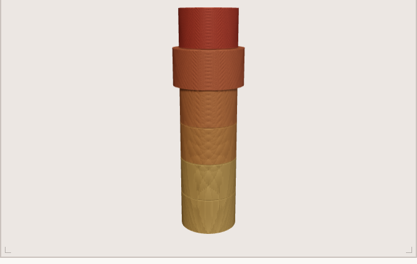

The Tutor
Physics & Maths,
Physics & Maths,
one to one.
I'm a physicist and former high‑school physics teacher. I've taught in the classroom, run university labs, and researched stellar evolution — and now I tutor UK students one to one, paced to your exam board.
DegreeMS Physics — University of Texas at Dallas
ClassroomFormer Physics Teacher — KIPP DC, Washington
ResearchAstrophysics — stellar evolution & GRBs
Also availableAP Physics · SAT Maths · Pre‑Calculus
The System

Your syllabus as a mastery mapEvery lesson runs on Scholar — tutoring software I built myself. It models your whole syllabus and adapts to exactly what you haven't mastered yet.
- 01A live mastery score for every single topic
- 02Each session re‑plans around your weak spots
- 03Mistakes become spaced‑repetition flashcards
- 04Downloadable progress report after each session
Subjects & levelsA‑Level Physics · A‑Level Maths (Pure · Mechanics · Statistics) · GCSE Physics · GCSE Maths